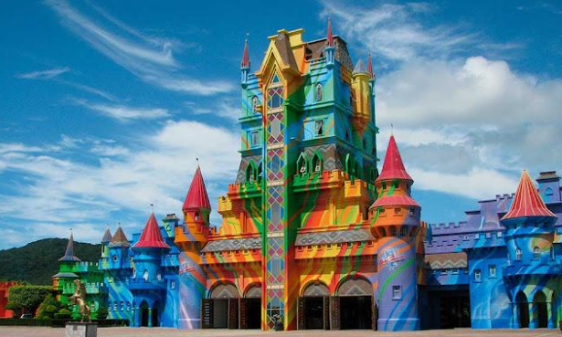
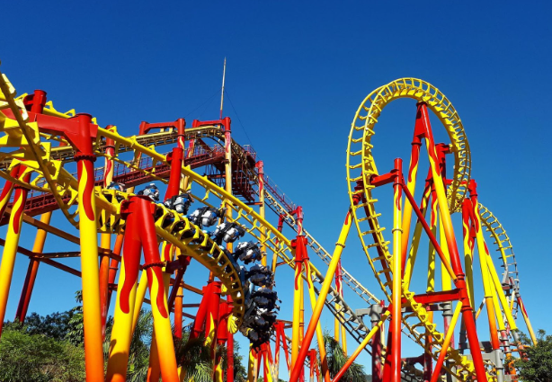
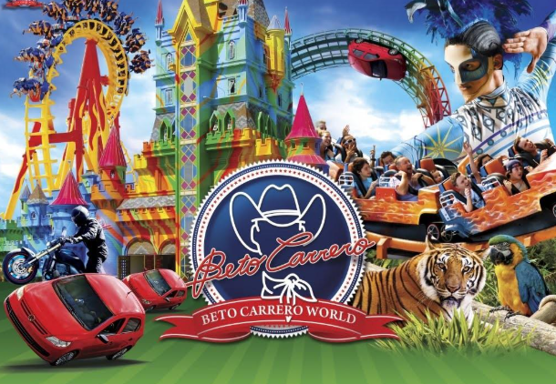

Detalhes do Roteiro
Início Sobre Nós Serviços Pacotes Atividades Contato Parque Beto Carrero World Venha Conhecer Se você está planejando uma visita ao Beto Carrero World com um grupo de sua empresa, nós podemos lhe ajudar! Disponibilizamos de pacotes corporativos personalizados para empresas que desejam promover integração, motivação ou celebrações especiais com seus colaboradores. Esses pacotes combinam diversão com experiências que reforçam o trabalho em equipe e o engajamento organizacional. O maior parque de diversões da América Latina oferece mais de 80 atrações entre brinquedos radicais, shows temáticos e um zoológico com mais de 700 animais vindos de todas as partes do mundo. Além da grandiosa área de diversão e lazer, o parque também conta com estrutura completa de alimentação, compras e apoio para os os visitantes. O Parque Beto Carrero World está localizado na cidade de Penha (SC), a 120 km de Florianópolis, 27 km de Balneário Camboriú, e 195 Km de Curitiba (PR). Serviços inclusos nesse pacote: Translado in/out partindo de Curitiba ou outras cidades do Paraná Guia de turismo credenciado Translado executivos com serviço de bordo Passaporte de acesso ao parque Serviços não inclusos nesse pacote: Qualquer outro serviço que não esteja especificado anteriormente Gastos de caráter pessoal Refeições não mencionadas como inclusas Passeios informados como opcional Programação: 06h30min – Saída de Curitiba ou outra cidade a consultar 09h00min – Entrada no Parque 19h15min – Saída do parque 22h00min – Chegada prevista em Curitiba ou outra cidade a consultar Vantagens de um Pacote Corporativo: Integração e Engajamento da Equipe – Promove a socialização fora do ambiente de trabalho, fortalecendo laços entre colegas e melhorando o clima organizacional.
Se você está planejando uma visita ao Beto Carrero World com um grupo de sua empresa, nós podemos lhe ajudar! Disponibilizamos de pacotes corporativos personalizados para empresas que desejam promover integração, motivação ou celebrações especiais com seus colaboradores. Esses pacotes combinam diversão com experiências que reforçam o trabalho em equipe e o engajamento organizacional. O maior parque de diversões da América Latina oferece mais de 80 atrações entre brinquedos radicais, shows temáticos e um zoológico com mais de 700 animais vindos de todas as partes do mundo. Além da grandiosa área de diversão e lazer, o parque também conta com estrutura completa de alimentação, compras e apoio para os os visitantes. O Parque Beto Carrero World está localizado na cidade de Penha (SC), a 120 km de Florianópolis, 27 km de Balneário Camboriú, e 195 Km de Curitiba (PR).
Galeria de Fotos


